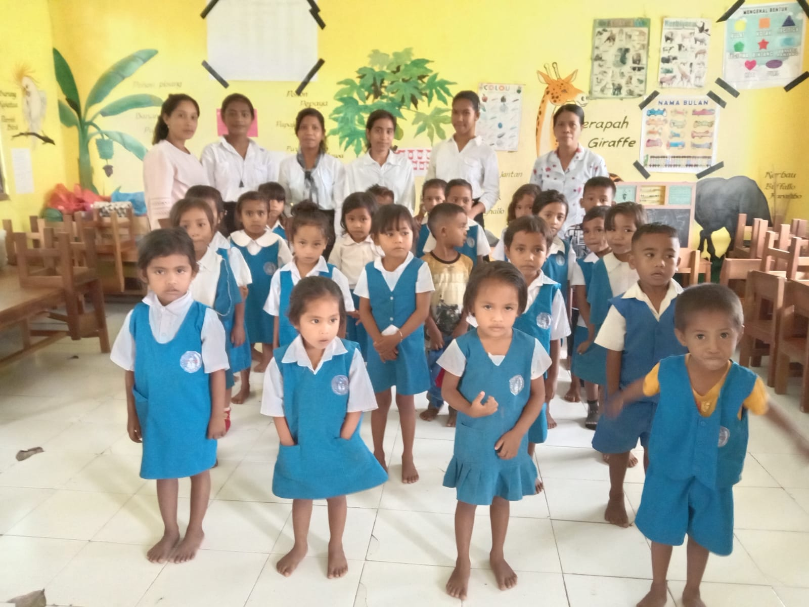
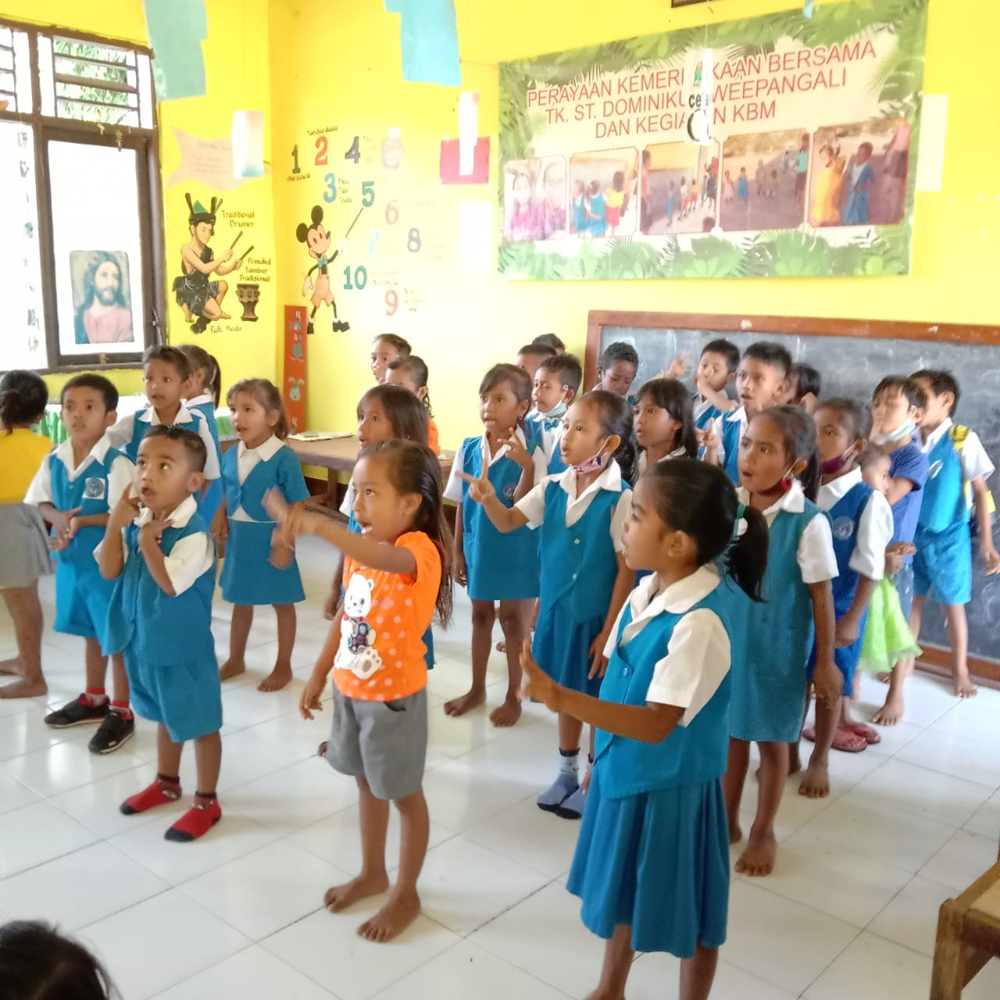
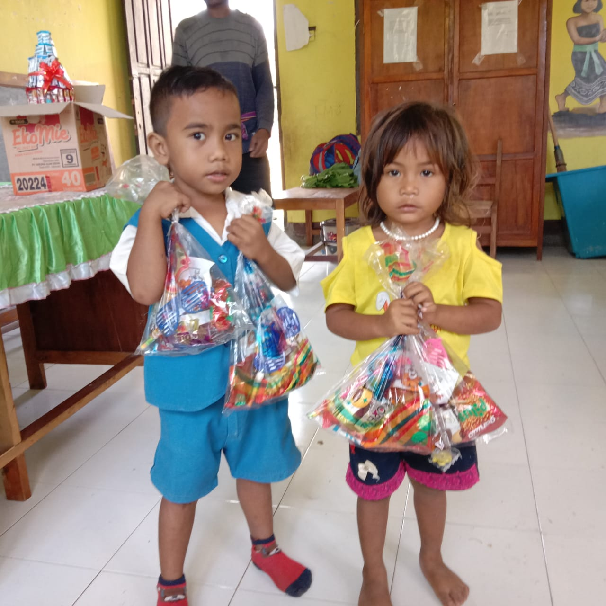
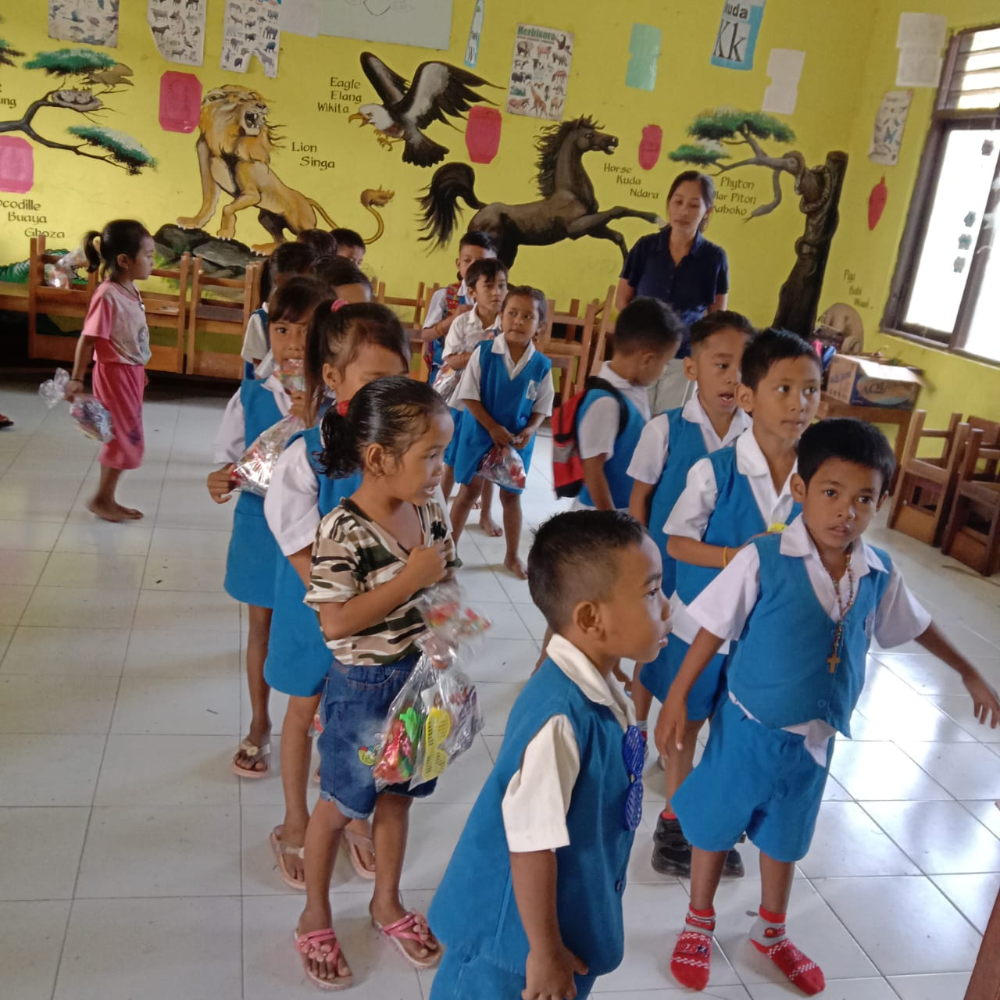

Agnes Geli
Kepala Sekolah TK St. Dominikus Weepangali
Mendidik dengan Hati, Menumbuhkan Generasi Beriman dan Berkarakter
Salam Sejahtera dalam Kasih Tuhan,
Puji dan syukur kita panjatkan ke hadirat Tuhan Yang Maha Esa atas rahmat dan penyertaan-Nya, sehingga TK St. Dominikus Weepangali dapat terus melayani dan mendampingi putra-putri tunas bangsa di Sumba Barat Daya.
Pendidikan anak usia dini adalah masa emas (*golden age*) yang menjadi fondasi utama tumbuh kembang anak. Berlandaskan rasa mencintai, menyayangi, dan ketulusan hati, kami berkomitmen menghadirkan ruang belajar yang ramah, aman, serta penuh sukacita lewat metode bermain sambil belajar.
Bersama dewan guru yang berdedikasi, kami mendidik anak-anak agar cakap menyongsong jenjang Sekolah Dasar, sekaligus membentuk pribadi yang berani, cerdas, sehat, santun, serta senantiasa takut akan Tuhan.
Dewan Guru Pengajar
Pendidik yang berdedikasi, kreatif, penuh kesabaran, dan kasih keibuan.

Martha Yuliana Andolo
Guru Pengajar
Fertiana Loba
Guru Pengajar
Maria Imakulata Tako
Guru Pengajar
Suasana Kegiatan di Sekolah
Momen ceria anak-anak saat belajar, berkreasi, dan bermain di lingkungan TK St. Dominikus Weepangali.

Pembiasaan & Doa
Membina iman sejak awal

Belajar Sambil Bermain
Eksplorasi motorik halus

Kreativitas & Seni
Mengasah imajinasi anak

Kebersamaan di Kelas
Menumbuhkan sikap santun
"Berawal dari rasa Mencintai, Menyayangi, dan rasa memiliki serta senang dengan anak-anak maka kami dengan niat yang tulus sesuai kesanggupan kami mau melayani, menyelenggarakan dan menciptakan anak – anak usia dini yang berani, Cerdas, Sehat dan berprilaku baik serta takut akan TUHAN melalui proses belajar mengajar bermain Sambil Belajar, belajar bermain seraya bermain yang nyaman dan menyenangkan."
"Semoga anak – anak yang di titipkan orang tua di lembaga ini menjadi anak - anak yang baik, cerdas, sehat serta anak yang dapat diharapkan oleh orang tua bangsa dan Negara."
4 Misi Utama Kami
Membentuk Generasi Yang Beriman Kepada Tuhan Yang Maha Esa.
Meningkatkan Pengetahuan dan Ketrampilan yang kreatif bagi pendidik agar dapat menciptakan anak-anak usia dini yang juga kreatif, berperilaku baik, cerdas, sehat, dan siap lanjut studi.
Menyiapkan program pendidikan yang baik agar anak dapat cakap untuk lanjut ke pendidikan Dasar yaitu SD.
Menyiapkan Program Pengembangan Karakter yang baik dan beretika (Santun).